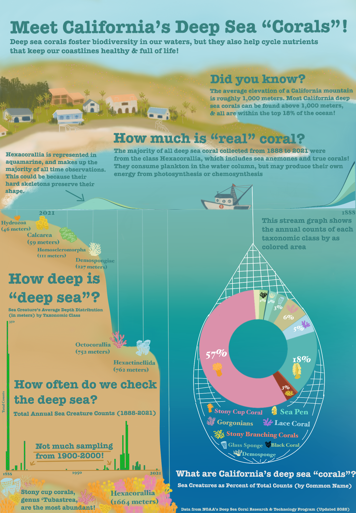

Link to Repository
The R code used to create these visuals can be found at the bottom of this post, in case you would like to run it for yourself! Or if you’d like, you can use this link to access the GitHub repository for this project: California Deep Sea Coral Notebook Repository
Why Deep Sea Corals?
I have always been fascinated by what amazing organisms corals are! Sea creatures with plants living in their skin, capable of building themselves up to cover miles of seafloor. A single organism can create the foundation of an entire ecosystem, a safe haven for all manner of marine life. I’ve traveled to see tropical coral reefs all over the world, and have always been amazed by their bright colors and abundance of movement and life!
I always dreamt that someday I would be able to live close to reef systems like these, but as a Californian, I never even considered that I might have some in my own backyard!
While combing through data sets for a project evaluating habitat distribution within California’s Marine Protected Areas, I found a data set from the National Oceanic & Atmospheric Administration (NOAA)’s West Coast Deep Sea Coral Initiative, combined with legacy deep sea coral counts from the Deep-Sea Coral Research & Technology Program Database.
It is important to note that many organisms beyond scleractinian corals (corals with hard skeletons) are included in this data set, such as hydrozoans, soft corals, sponges, anemones, etc. And while deep sea corals and their counterparts may not rely on symbiotic relationships with plants to survive, they are just as intricate and colorful as their tropical counterparts, and contribute vital ecosystem services as well!
Nutrient cycling, pollution mitigation, habitat mediation, secondary production to increase fisheries biomass, and carbon sequestration are among the many benefits that deep water reefs provide1. With recent debate around the use of deep sea environments for mining and other anthropogenic activity, I was interested to see how we Californians have already been affecting our deep sea reefs, and if I could somehow communicate these interactions effectively through an infographic.
Scope of the Data:
However, as I looked into the data, I realized that sampling efforts of deep sea benthic biota has been few and far between. While recent efforts from the West Coast Deep Sea Coral Initiative gave us samples from 2018 to 2021, the previous sampling period of a comparable magnitude occurred from 1888-1900.
This would introduce a lot of bias into any statistical approach looking to identify the effects of anthropogenic activity on deep sea ecosystems due to infrequent sampling. Similarly, as it took quite a while to find a data source with sufficient temperature and water chemistry sampling at depth, I was unable to implement such data in my final visualizations.
Thus, my variables were limited to:
Year of observation (since not all observations had an exact date)
Total count of organisms per observation (minimum of 1)
Taxonomic information of organism (Phylum, Class, Order, Family, Genus, Species)
Common name of organism
Depth (in meters) of observation
Total number of observations
With this information, I was able to run summary statistics and get interesting facts regarding deep sea biota distribution and composition, but no inferences could be drawn beyond that. I began asking my peers what they would like to learn about deep sea coral reefs
“Deep Sea, but Friendly!” :
I was really surprised to find that many of my peers were deeply afraid (pardon the pun) of the deep sea! Whether it was thalassophobia, trypophobia, or just a general distaste for odd looking creatures, people were not particularly interested in my topic. I was shocked to hear someone say: “I don’t really care about that at all…it’s super far away and deep sea corals are just not very interesting”.
But it was through this engagement with my peers that I realized the need to pivot my audience.
I decided I would make an infographic that went against the typical “scary deep sea” vibes, and instead create something soft, colorful, and inviting. I gathered inspiration from children’s infographics I had seen while I worked at the Aquarium of the Pacific, and the Studio Ghibli movie ‘Ponyo’ that used soft colors and drawings to make the deep sea mesmerizing and gentle.
My art skills may be wanting, but I decided I would give it a shot, and make something a younger me, and perhaps the general public, would be interested in. Essentially, a pretty image that tricked people into learning about the deep water corals!
Assembling the graphs:
I used R to clean and wrangle my data: selecting observations within California alone and my columns of interest. I then began running summary statistics on grouped data sets to get answers to a few questions I thought the general public may be interested in, and that I could surmise with my data:
How deep is the “deep sea”?
How often do we check the deep sea?
How much is actually coral?
What are “deep sea corals”?
For my first graph, I wanted to check the average depth that each taxonomic class of organism could be found. I wanted to show people where certain types of creatures like to live and how far down the furthest ones are, as this answers the question “How deep is the”deep sea”?“.
I thought this should be addressed since all of these organisms can be found above 2000 meters depth! With the average depth of the Pacific ocean being 4000 meters, and the max depth at 11,000, I wanted to convey that these reefs aren’t all that far away from human activity.
I decided to use an inverted lollipop graph, to show depth increasing from left to right.
In my final infographic, I decided that this graph would be utilized as the bathymetry of the seafloor (creating the miniature continental shelf). I also decided to make the water column a blue gradient to match the depth change, and instead represent the dots with hand drawn images of an organism of each class. This allows me to bring more color and familiarity to the scene (help people distinguish between classes).
For my second graph, I wanted to answer “How often do we check the deep sea?”, to draw attention to major gaps in sampling. Since reefs serve an important role in regulating our ocean and atmosphere, I wanted to show how sparingly we seem to check them.
This histogram seemed an easy way to show counts over time, and I was also able to color it to make it look like eelgrass! (Not deep sea but I could not think of a deep sea organism I could draw in a recognizable shape with this small of bars).
For my third graph, I decided to create a streamgraph to use as the waves at the top of the water column. This would be very similar to the histogram, but would showcase that certain classes seem to have more samples than others. This would answer the question “How much is”real” coral?“, since most observations are from scleractinian corals, and therefore we may have bias towards observing organisms that can preserve their shape when brought up to the surface.
Due to the odd gaps in sampling and the way my coastline was drawn, I ended up flipping the x-axis for this graph.
My fourth and final visualization is a doughnut chart of organisms by common name, as percents of total counts. I felt as though a doughnut chart was slightly easier to read than a pie chart, but overall an ok use of visual as I mainly wanted to show how much of the biota are actual corals.
I chose a light, oceanic palette with a few pops of color that are frequently represented in deep sea organisms (red, pink, yellow). This addresses the question “What are California’s deep sea corals?”, and I felt as though using common names and drawings of what the organisms look like could help distinguish them a little bit.
In the final visualization, I wanted to draw this doughnut being pulled up in a trawl net, along with the legend of organisms.
Final Infographic:
For my drawings and combining all the pieces, I decided to use Procreate to trace over the graphs, “paint” in a background, and assemble everything into a coastal ocean scene.
I chose to display my graphs and coral images in this manner (and not simply on a dark blue or black background) in hopes of emphasizing how closely humans and reefs are to one another, and how we affect one another in turn. I ended up using a slightly bolder font with serifs that I still thought conveyed a causal and gentle look (like a children’s textbook).
I ended up removing most axis and anything that made the graphs look too boxy in order to maintain a more fluid image. I also felt that most of the axis were superfluous with the drawings and labels (I had lots of categorical data), which lends itself to being more colorblind friendly as well.
And without further ado…here she is!

Overall, it may not be perfect, but I’m glad I was able to create an infographic that looks and feels much different from typical ‘deep sea’ media! I think if a professional illustrator made something in this style, I’d absolutely adore it!
Thank you so much for checking out my little project, and I hope this encourages you to try something different and maybe a little bit silly too!
Here is a code chunk you can open up to explore the code on your own!
Code
# Prep code --------------------------------------------------------------------------------
# Load libraries
librarian::shelf(tidyverse, here, janitor, dplyr, ggstream, showtext)
# Create palette and add custom fonts
ghibli_pal <- c("#A9D294","#225F6B", "#8FD3C2", "#7FBEA7", "#C6C28F","#41A1A8", "lightblue", "#57B6B3", "#B7593F", "#933D26", "#DB91AB", "#E6E6BB" )
font_add_google(name = "Short Stack", family = "shortstack")
showtext_auto()
# Initial cleaning -----------------------------------------------------------------------------
# Load in the coral data
deep_sea_coral <- read_csv(here("data", "deep_sea_coral.csv"))
# Filter to only US observations
US_deep_sea_coral <- deep_sea_coral %>%
filter(Country == "USA")
# Filter to California observations
Filtered_deep_sea_coral <- US_deep_sea_coral %>%
filter(LargeMarineEcosystem == "California Current")
# Select only relevant columns for initial data vis
coral_data <- Filtered_deep_sea_coral %>%
select(c('ScientificName',
'VernacularNameCategory',
'Phylum',
'Class',
'Order',
'Genus',
'Locality',
'latitude',
'longitude',
'DepthInMeters',
'ObservationDate',
'ObservationYear',
'IndividualCount'))
# Remove data points for Oregon, Washington, and specifically Columbia river data
coral_data_filtered <-coral_data[!grepl("Oregon", coral_data$Locality),]
coral_data_filtered <-coral_data_filtered[!grepl("Washington", coral_data_filtered$Locality),]
coral_data_final <-coral_data_filtered[!grepl("Columbia", coral_data_filtered$Locality),]
# Check to see what data type the DepthInMeters column is
class(coral_data_final$DepthInMeters)
# Convert the depth column to integers
coral_data_final$DepthInMeters <- as.integer(coral_data_final$DepthInMeters)
# Create a mean depth by class variable
mean_depth_class <- coral_data_final %>%
group_by(Class) %>%
mutate(Mean_Depth= mean(DepthInMeters))
# Find the sum of counts for each common name biota
coral_data_counts <-coral_data_final %>%
group_by(VernacularNameCategory) %>%
mutate(sum_counts = sum(IndividualCount))
# Remove NAs
mean_depth_clean <-mean_depth_class %>%
drop_na()
# Create a df with the mean counts by year and taxa Class
mean_count_class <- mean_depth_clean %>%
group_by(Class, ObservationYear) %>%
summarise(sum_count = sum(IndividualCount))
# Assemble graphs -----------------------------------------------------------------------------
# Lollipop chart ---------------------------------
# Line graph with icons for class by depth
depth_graph <- ggplot(mean_depth_class, aes(x= reorder(Class, Mean_Depth), y= Mean_Depth)) +
geom_point(aes(colour = -Mean_Depth,
size= 4)) +
geom_path() +
scale_y_reverse() +
scale_x_discrete(position= "top") +
labs(title= "California Deep Sea Biota",
subtitle= "Taxomomic class distributed by average depth (m)",
x= element_blank(),
y= element_blank())+
theme_minimal() +
theme(legend.position= "none",
axis.text.x = element_text(color= "#225F6B",family= "shortstack", size = 6),
axis.text.y= element_text(color= "#225F6B"),
plot.title = element_text(color= "#225F6B",family= "shortstack", size = 18),
plot.subtitle= element_text(color= "#225F6B",family= "shortstack", size = 14))
# Histogram ----------------------------------
# Bar graphs of observations over time
histogram <-ggplot(coral_data_final, aes(x= ObservationYear, y= IndividualCount)) +
geom_col(color = "seagreen",
fill= "green3") +
labs(title= "California Deep Sea Biota Counts by Year",
x= "Year",
y= "Total Observations")+
scale_x_continuous(breaks = scales::pretty_breaks(n = 5)) +
theme_minimal() +
theme(plot.title = element_text(color= "#225F6B",family= "shortstack", size=18, hjust= 0.5),
axis.title = element_text(color="#225F6B", family= "shortstack"),
axis.text.x = element_text(color= "#225F6B",family= "shortstack", size = 6),
axis.text.y= element_text(color= "#225F6B",family= "shortstack"),
plot.subtitle= element_text(color= "#225F6B",family= "shortstack", size = 14),
panel.grid.minor = element_blank())
# Streamgraph ---------------------------------
streamgraph_corals <-ggplot(mean_count_class, aes(x = ObservationYear, y = sum_count, fill= Class)) +
geom_stream(type= "ridge") +
scale_fill_manual("Taxonomic \n\ Class", values= ghibli_pal) +
labs(title= "Marine Creature Counts in California Waters",
subtitle= "Grouped by Taxonomic Class Over the Years",
x= "Observation Year",
y= "Total Creature Counts")+
theme_minimal() +
theme(axis.line = element_line(color="#225F6B"),
plot.background = element_blank(),
panel.grid.major = element_blank(),
panel.grid.minor = element_blank(),
panel.border = element_blank(),
axis.text.x = element_text(color= "#225F6B"),
axis.text.y = element_text(color= "#225F6B"),
axis.title.x = element_text(color= "#225F6B"),
axis.title.y = element_text(color= "#225F6B"),
title = element_text(family= "shortstack", face= "bold", size= 13, color= "#225F6B"),
legend.text = element_text(family= "shortstack", face= "bold", color= "#225F6B"))
# Doughnut chart -------------------------------
# Doughnut chart with percent of total counts for organisms (common name)
coral_data_counts_fixed <- coral_data_final %>%
group_by(VernacularNameCategory) %>%
summarize(sum_count = sum(IndividualCount))
# Compute percentages
coral_data_counts_fixed$fraction = coral_data_counts_fixed$sum_count / sum(coral_data_counts_fixed$sum_count)
# Compute the cumulative percentages (top of each rectangle)
coral_data_counts_fixed$ymax = cumsum(coral_data_counts_fixed$fraction)
# Compute the bottom of each rectangle
coral_data_counts_fixed$ymin = c(0, head(coral_data_counts_fixed$ymax, n=-1))
coral_data_counts_fixed$Type <- coral_data_counts_fixed$VernacularNameCategory
# Compute label position
coral_data_counts_fixed$labelPosition <- (coral_data_counts_fixed$ymax + coral_data_counts_fixed$ymin) / 2
# Compute a good label
coral_data_counts_fixed$label <- paste0(round(coral_data_counts_fixed$fraction, 2))
# Assemble the graph
ggplot(coral_data_counts_fixed, aes(ymax=ymax, ymin=ymin, xmax=4, xmin=3, fill=Type)) +
geom_rect(show.legend = FALSE) +
geom_label( x=3.75, aes(y=labelPosition, label=label),
size=2,
show.legend = TRUE,
colour= "#225F6B") +
scale_fill_manual(values = ghibli_pal) +
labs(title= "California Deep Sea Biota as Percent of Total Counts (1888-2021)") +
coord_polar(theta="y") +
xlim(c(2, 4) ) +
theme_void()
# Save graphs as png----------------------------------------------------------------------------
# Lollipop chart saved
ggsave(
plot = depth_graph,
filename = "depth_graph_corals.png"
)
# Histogram saved
ggsave(
plot = histogram,
filename = "histogram_corals.png"
)
# Streamgraph saved
ggsave(
plot = streamgraph_corals,
filename = "streamgraph_corals.png"
)
# Doughnut chart saved
ggsave(
plot = doughnut,
filename = "doughnut_corals.png"
)
# Save graphs as png----------------------------------------------------------------------------
#Note: You can use a transparent background for ease of drawing and tracing as I did, by setting fill to transparent in theme or using the transparent bg option in save...
#transparent_bg_histogram <- histogram + theme(rect = element_rect(fill = "transparent"))
#ggsave(plot = histogram,filename = "histogram_corals.png", bg= "transparent")Footnotes
La Bianca, et al. (2023). “A standardised ecosystem services framework for the deep sea”, Frontiers in Marine Science. Link to scientific article . DOI: 10.3389/fmars.2023.1176230↩︎